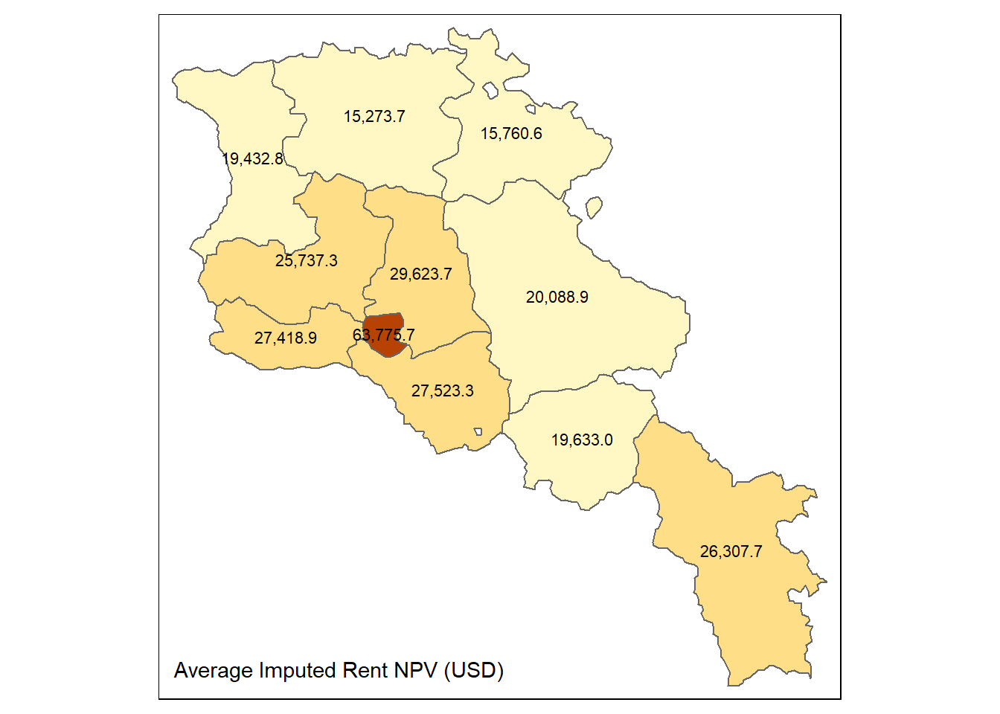
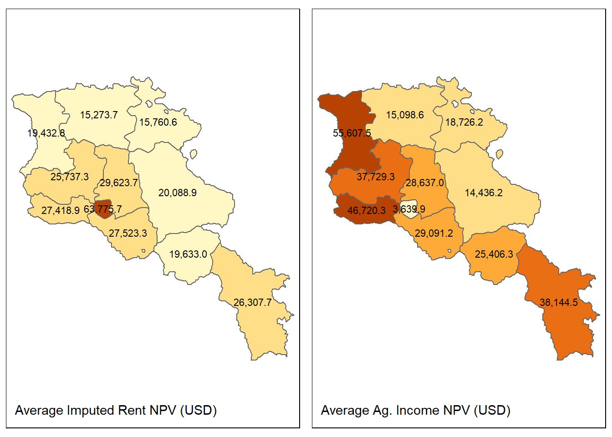
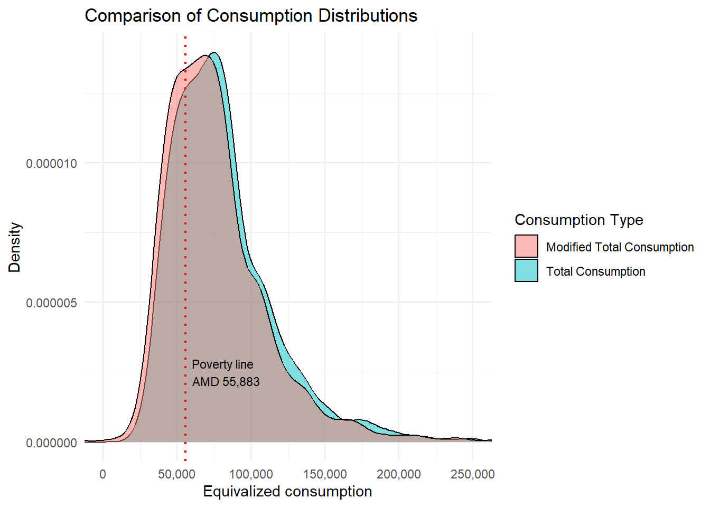

# Some comment that is not evaluated by R
some_variable <- some_function(some_object, some_parameter = TRUE)Vulnerability Analysis Calculations
1 Introduction
In the context of the development of the Country Climate and Development Report (CCDR) for Armenia, the poverty team is contributing with inputs for vulnerability analysis at the household level. The methods for these inputs are in active development and benefit greatly from the practical applications and interdisciplinary discussions that take place during the creation of these CCDRs. This guide aims to document the steps carried out to link vulnerability impacts and household survey data.
As a convention, code is presented in the following format in this guide:
We assume that the reader has created an Rstudio project and is familiar with basic R functions. Within that project we recommend the following file structure:
root/
├── scripts
│ └── my_script.R
├── data/
| ├── my_data.sav
| ├── my_data.dta
| └── my_data.csv
└── output
├── my_output1.csv
└── my_output2.xlsxUsing RStudio project makes it possible to not use setwd() to establish the root directory and refer to subdirectories in a relative manner, making interoperability easier within teams and not hard coding a particular computer’s file structure into the code. If you are not using RStudio, just add setwd(r'(C:\My\path\to\project\root)') at the beginning of your coding session.
2 Preamble
We start with a clean environment, making sure that any objects from a previous session are not present. We take this opportunity to keep our country ISO code in a variable iso in case we need it later.
# Clean workspace
rm(list = ls())
# Armenia country ISO code
iso <- "ARM"
# Exchange rate USD per dram
er <- 0.002310Rather than calling our libraries as we go, we will make sure we have everything we need from the beginning.
# Load packages
library(tidyverse) # includes dplyr, ggplot2 and others
library(haven) # to read SPSS and Stata datasets
library(readxl) # to read from MS-Excel
library(openxlsx) # to write to MS-Excel.
library(gt) # pretty tables
library(car) # Companion to applied regression
library(modelr) # regression models
library(janitor) # pretty subtotals
library(purrr) # map vectors (aggregation)
# Geopackages
library(sf) # to read and write shapefile maps
library(terra) # to perform geocalculations
library(tmap) # for static and interactive maps3 Datasets
We then load the datasets that we need for this study. We are lucky that the World Bank has processed some of these already for poverty analysis and so we have the original SPSS datasets with all variables for Households hh and for Individuals pp, as well as a consumption aggregate ca and a household income ic dataset, which are Stata datasets. This is for the year 2022. These are imported using the haven package. These are based on Armenia Integrated Living Conditions Survey 2022 (ARMSTAT, 2023).
# Original SPSS datasets
# Households (hh)
hh <- read_sav(
"data/ARM-HH-survey/original-spss-files/ILCS-ARM-2022-Households.sav")
# Persons (pp)
pp <- read_sav(
"data/ARM-HH-survey/original-spss-files/ILCS-ARM-2022-Persons.sav")
# Processed WB datasets
# Consumption aggregate at household level (ca)
ca <- read_dta("data/ARM-HH-survey/CONSAGG2022.dta")
# Processed income at household level (ic)
ic <- read_dta("data/ARM-HH-survey/totinc.dta") We will work non-destructively, meaning we will not rewrite these data sets and we will only create intermediate data frame objects from them to perform transformations, selections and other data management tasks. For example, we will keep household assignment to poverty status and consumption deciles handy by creating a subset of our ca data with only our household identifiers, deciles, and poverty.
# From the WB processed dataset, we extract deciles and poverty
deciles <- ca |>
select( hhid, decile, poor_Avpovln2022,
poor_Foodpovln2022, poor_Lpovln2022, poor_Upovln2022)We also have geographical information for level 1 in Shapefile format, which we import with the sf package. We rename the column with the name of the administrative region to match our household survey data set conventions to ease mergers. The dplyr package from the tidyverse meta package allows us to “pipe” or link processing steps using the |> pipe, which can be inserted using Ctrl + m. Although there is no geoprocessing in this analysis, this will come in handy for graphical presentations. Let’s have a look at it.
# Geodata
# Armenia marzes or administrative level 1 shapefile
adm1 <- read_sf("data/ARM-Geodata/ARM-ADM1.shp") |>
select(NAM_1, COD_HH_SVY, geometry) |>
# Make sure that names match the rest of datasets
mutate(NAM_1 = if_else(NAM_1 == "Gergharkunik", "Gegharkunik", NAM_1))
names(adm1)[2] <- "hh_02"
tm_shape(adm1)+
tm_polygons("NAM_1", legend.show = FALSE) +
tm_text("NAM_1", size = 3/4)
Marzes names are more accurate in the shapefile than in the survey. We will use them from here on instead of the survey factor labels.
hh <- hh |>
left_join(adm1, join_by(hh_02 == hh_02)) |>
select(-geometry)
ic <- ic |>
left_join(adm1, join_by(hh_02 == hh_02)) |>
select(-geometry)Finally, but not least important, we have our vulnerability information.
buildings_aal <-
read_xlsx("data/ARM-Vulnerability-Analysis/Data_AAL_AAE.xlsx",
sheet = "Building_AAL") |>
# Make sure that names match the rest of datasets
mutate(NAM_1 = if_else(NAM_1 == "Gergharkunik", "Gegharkunik", NAM_1))
buildings_1in100 <-
read_xlsx("data/ARM-Vulnerability-Analysis/Data_AAL_AAE.xlsx",
sheet = "Building_1in100")
crops_productivity <-
read.csv("data/ARM-Vulnerability-Analysis/ARM_crops_combined_REF_shock_admin1.csv") |>
rename(NAM_1 = Province)
crops_aal <-
read_xlsx("data/ARM-Vulnerability-Analysis/Data_AAL_AAE.xlsx",
sheet = "Agriculture_AAL")
crops_1in100 <-
read_xlsx("data/ARM-Vulnerability-Analysis/Data_AAL_AAE.xlsx",
sheet = "Agriculture_1in100")4 Asset value of income flows
4.1 Imputed rent
“Housing, measured as the welfare value of the flow of services households derive from their dwelling, is one of the most relevant components of households’ welfare aggregate, which is used as a basis for distributional analysis” (Deaton & Zaidi, 2002; cited by Ceriani, Olivieri, & Ranzani, 2019). In Armenia, most households own their home, so the emergent rental market information is used to impute rent to non-renters using a log linear modeling approach described by (Ceriani et al., 2019), in which imputed rent is predicted using a combination of household characteristics (urban/rural, Marz, number of rooms, presence of an indoor toilet, number of household, square meters, type of dwelling, household members) and head of household characteristics (i.e. sex, highest completed schooling level, age group). The first step is to identify these characteristics for the regression.
We first extract relevant characteristics of the heads of household and create a heads subset of our person’s database, which we call heads. It has our household id (interview__key), sex (mem_02), age (mem_05), and education level.
heads <- pp |>
filter(mem_03 == 1) |>
select( interview__key ,mem_02, mem_05,ed_03)Since we only have one head of household per household, we can join this data with our household information. We now create a subset of our household data, which we call imputed_rent with the relevant dwelling and head of household variables according to the model suggested by Ceriani et al. (2019).
imputed_rent <- hh |>
left_join( heads , join_by(interview__key == interview__key)) |>
select( interview__key, hh_02, hh_03, hous_02, hous_10, hous_04,mem_02,
mem_05, ed_03, mem_num, hous_41, hous_19,hous_09, weight)To save on the creation of unnecessary dummy variables for our regression, we take advantage of the factors present in the original SPSS files, which carry over when importing into R and are used by it to create them automatically at prediction time. Pay attention to the creation of age groups using cut() .
# Convert categorical variables to factors and create dummy variables
imputed_rent <- imputed_rent |>
mutate(hh_02 = as.factor(hh_02), # Marz
hh_03 = as.factor(hh_03), # Urban / Rural
hous_02 = as.factor(hous_02), # Ownership or rental
mem_02 = as.factor(mem_02), # Sex
ed_03 = as.factor(ed_03), # Education level
hous_41 = as.factor(hous_41), # Type of toilet
hous_19 = as.factor(hous_19)) |> # Source of electricity
mutate(age_group = cut(mem_05, breaks = c(0, 24, 34, 44,
54, 64, Inf),
labels = c("15-24", "25-34", "35-44",
"45-54", "55-64", "65+"),
right = TRUE)) |>
mutate(age_group = as.factor(age_group)) |>
mutate(bathroom_dummy = ifelse(hous_41 == 1, 1, 0)) |>
mutate(bathroom_dummy = as.factor(bathroom_dummy)) |>
select(-mem_05, -hous_41) # Remove the original age variableFor our model, we need to concentrate on tenants who pay rent. So we subset further creating a data set called renters_df. Variable hous_02 asks whether the household owns this dwelling or it is rented (with possible values 1. own, 2. rent, 3. other). And for renters, we want those whose value is larger than zero.
renters_df <- imputed_rent |>
filter(hous_02 == 2) |>
filter(!is.na(hous_04)) |>
filter(hous_04 >0)We are now ready to build our model:
log_linear_model <- lm(log(hous_04) ~ # Rent, which depends on:
hh_02 + # Marz
hh_03 + # Urban / Rural
hous_10 + # Number of rooms
mem_02 + # Sex of head of HH
ed_03 + # Education level
mem_num + # Number of HH members
bathroom_dummy + # Flushing toilet dummy
hous_09 + # Total square meters
age_group, # Age brackets
data = renters_df)For space considerations, we omit the output of the model, but you can inspect the results of the model with summary(log_linear_model) . This particular application for Armenia results in small positive significance for total square meters and having a flushing toilet, small negative significance for being female and high negative significance for the Marzes in relation to Yerevan, as well as high negative significance for rural areas (Multiple R-squared: 0.4883). In other words, rent for Armenians will be higher if they live in urban areas, have a working toilet, have a larger imputed_rent and the head of household is male. With our coefficients we can now impute rent for our non renters.
Before we move on, we need to de-factor some variables and re-code them so that our predictions run smoothly. We did not get predictions for education level 0 in our renters database, but there are some in our non_renters_df data set. Since they are factors (ie. categorical values) and not years of education, when R is running the regression, it creates dummy variables in the background for each level that it encounters in the data. Since that level was missing in the renters data, the prediction does not include it. So when it encounters that value in the non-renters data frame, R does not know how to handle it. This might not happen in your data set, but beware that if it does, this is the reason why your model won’t predict. The error that gave this away read.
Error in model.frame.default(Terms, newdata,
na.action = na.action, xlev = object$xlevels):
factor ed_03 has new levels 0 So let’s take care of non-trained values by making the decision to change the 12 cases that responded “none” to “primary”. Another option would be to change it to “other”, but since the prediction there was made with 1 observation we felt it was less of a disturbance this way. We find the values to change by indexing in square brackets; a powerful way of base R to slice data sets in multiple ways.
# Take care of non training values in the original data set
# Convert to numeric to perform the operation
imputed_rent$ed_03 <- as.numeric(as.character(imputed_rent$ed_03))
imputed_rent$ed_03[imputed_rent$ed_03 == 0] <- 1 # Re-code 0 to 1
imputed_rent$ed_03 <- as.factor(imputed_rent$ed_03) # Convert back to factorWith everything in place, we can now predict the imputed rent. Actually, the log of predicted rent, so we transform the log value to value in the next pipe. We can do two things. One is to create a non-renters data set, predict rent there and then join with the renters data frame. Another is just to apply the prediction to the entire imputed_rent data set and then just replace the result with missing values for the renters. We will do the latter.
imputed_rent <- imputed_rent |>
add_predictions(log_linear_model,
var = "log_rent_predicted") |>
mutate(imputed_rent = exp(log_rent_predicted)) |>
# Replace renters imputed value with "missing"
mutate(imputed_rent = if_else(hous_02 %in% c("2", "3"),
NA, imputed_rent)) |>
# We just keep the household id and the imputed value going forward
select( interview__key, imputed_rent)
# Remove intermediate products
rm(heads, log_linear_model, renters_df)At this point we can save the prediction if we wish to do so to disk, but it is not necessary for our purposes here as we can continue using the created object imputed_rent in our calculations going forward. For example to output to Excel, Stata, SPSS, and CSV we would write (make sure your outputs directory exists):
# Stata
write_dta(imputed_rent, "outputs/imputed_rent.dta", version = 10)
# Excel
write.xlsx(imputed_rent,"ouptuts/imputed_rent.xlsx",
sheetName = "imputed_rent",
rowNames = FALSE,
colnames = FALSE,
overwrite = TRUE,
asTable = FALSE
)
# SPSS
write_sav(data, "outputs/imputed_rent.sav")
# Comma Separated Values
write.csv(imputed_rent,"outputs/imputed_rent.csv" sep = ",")Let’s explore the results, by first summarizing the data.
# Average imputed rent by marz
imputed_rent_marz <- hh |>
left_join( deciles, join_by( interview__key == hhid)) |>
left_join( imputed_rent, join_by( interview__key == interview__key)) |>
select(decile, hh_02, hh_03, hous_10, imputed_rent,weight, NAM_1) |>
group_by(NAM_1) |>
summarize(avg_dwelling_m2 =
weighted.mean(hous_10, as.integer(weight), na.rm = TRUE),
avg_imputed_rent =
weighted.mean(imputed_rent, as.integer(weight),
na.rm = TRUE),
avg_imputed_rent_us =
weighted.mean(imputed_rent, as.integer(weight),
na.rm = TRUE)*er)And then making a table.
imputed_rent_marz |>
gt() |>
tab_header(
title = "Imputed rent in Armenia",
subtitle = "Average dwelling area and imputed rent (Year 2022)"
) |>
# grand_summary_rows(
# columns = c(avg_dwelling_m2,avg_imputed_rent),
# fns= list(
# Average = ~mean(., na.rm = TRUE)
# ),
# fmt = list(~ fmt_number(., decimals = 1))
# ) |>
fmt_number(
columns = c(avg_dwelling_m2, avg_imputed_rent, avg_imputed_rent_us),
decimals = 1
) |>
cols_label(
NAM_1 = "Marz",
avg_dwelling_m2 = "Average dwelling area ({{m^2}})",
avg_imputed_rent = "Average imputed monthly rent (AMD)",
avg_imputed_rent_us = "Average imputed monthly rent (USD)"
) |>
tab_source_note(
source_note = md("Own elaboration based on Armenia Integrated Living Conditions Survey (ARMSTAT, 2023).")
)| Imputed rent in Armenia | |||
|---|---|---|---|
| Average dwelling area and imputed rent (Year 2022) | |||
| Marz | Average dwelling area (m2) | Average imputed monthly rent (AMD) | Average imputed monthly rent (USD) |
| Aragatsotn | 103.8 | 37,769.4 | 87.2 |
| Ararat | 102.6 | 40,390.4 | 93.3 |
| Armavir | 109.3 | 40,237.3 | 92.9 |
| Gegharkunik | 115.4 | 29,480.5 | 68.1 |
| Kotayk | 96.2 | 43,472.8 | 100.4 |
| Lori | 87.9 | 22,414.2 | 51.8 |
| Shirak | 82.7 | 28,517.6 | 65.9 |
| Syunik | 95.1 | 38,606.5 | 89.2 |
| Tavush | 97.5 | 23,128.6 | 53.4 |
| Vayots Dzor | 104.7 | 28,811.5 | 66.6 |
| Yerevan | 70.9 | 93,590.9 | 216.2 |
| Own elaboration based on Armenia Integrated Living Conditions Survey (ARMSTAT, 2023). | |||
4.2 Net present value of imputed rent
The previous steps help us determine the imputed monthly rent for home owners. We can treat this income as an asset by considering the net present value of future rents. We use the traditional formula:
\[ \text{NPV} = \sum_{t=0}^{N} \frac{C_t}{(1 + r)^t} \tag{1}\]
Where:
- \(NPV\) = Net Present Value
- \(C_t\) = Net cash inflow during the period \(t\)
- \(r\) = Discount rate
- \(t\) = Time period
- \(N\) = Total number of periods
We will use an annual discount rate of 6%, which is customary for homes, an inflation of 5% for 27 years, since the survey was conducted in the last few months of 2022 and we are making the calculation from January 01 2023 to December 31, 2050.
# Parameters
discount_rate <- 0.06 # Annual discount rate, for example, 5%
inflation_rate <- 0.05 # Annual inflation rate, for example, 5%
years <- 28 # Number of years to discount
# Adjust rates for monthly compounding, to avoid overestimation
monthly_discount_rate <- (1 + discount_rate)^(1/12) - 1
monthly_inflation_rate <- (1 + inflation_rate)^(1/12) - 1
# Annual imputed rent
imputed_rent$annual_imputed_rent <- imputed_rent$imputed_rent * 12 We can do two things, either annualize the monthly income or divide our rates by 12 and have the periods in the formula be months. It depends on the kind of shocks that we want to do. For example, if we know that a 1 in a 100 year event will have an impact that will last, let’s say one and a half year, then having months is useful as we can introduce the shock as a tax that has an effect on 18 months worth of net present value. However, if we know that our shocks will have annual consequences, then doing our calculations year by year is enough.
To calculate each months worth of discounted present value, we use sapply() to perform the calculation over \(years * 12\) months. This is similar to using for loops in other languages, but it is much more efficient, because it works hard to summarize results as vectors, and avoids iterations. In this case, since we are operating the formula over the entire vector of imputed rents, month, the result return(present_value) is not a vector but a matrix called present_value that gets attached to our data set at once (not column by column) where each column represents a month’s worth of discounted present value for each household in the rows. Notice that we are using our modified monthly rates, which are adjusted (not just the annual divided by 12) to more accurately reflect the compounding value of money.
# Monthly periods
imputed_rent$present_value_rent <- sapply(1:(years * 12), function(n) {
future_rent <- imputed_rent$imputed_rent * (1 + monthly_inflation_rate)^n
present_value <- future_rent / ((1 + monthly_discount_rate)^n)
return(present_value)
})That results in the creation of a matrix containing the monthly discounted values by month. We can see a snippet of this attached matrix, filtering for the observations that are not missing values and showing only the first four valid households and months using:
imputed_rent$present_value_rent[
!is.na(imputed_rent$present_value_rent[, 1]), ][1:4, 1:4] [,1] [,2] [,3] [,4]
1 20118.27 20102.39 20086.51 20070.65
2 20619.64 20603.36 20587.09 20570.84
3 20475.11 20458.94 20442.78 20426.64
4 25308.52 25288.54 25268.57 25248.62After that we sum over the columns corresponding to our monthly discounted values:
# Sum up the present values for the total present value over the period
imputed_rent$net_present_value_rent <- rowSums(imputed_rent$present_value_rent)For comparison, we can do it annually as well. Here we use our annual rates (discount, and inflation) to generate a similar matrix, where all columns refer to years.
# Annual periods
imputed_rent$present_value_rent2 <- sapply(1:(years), function(n) {
future_rent2 <- imputed_rent$annual_imputed_rent * (1 + inflation_rate)^(n)
present_value2 <- future_rent2 / ((1 + discount_rate)^n)
return(present_value2)
})# Sum up the present values for the total present value over the period
imputed_rent$net_present_value_rent2 <- rowSums(imputed_rent$present_value_rent2)# Delete partial calculations
imputed_rent <- imputed_rent |>
select(interview__key, imputed_rent, net_present_value_rent, net_present_value_rent2)For a comparison between the two calculations of net present value, we can compare their means and their difference should be zero:
hh |>
left_join( deciles, join_by( interview__key == hhid)) |>
left_join( imputed_rent, join_by( interview__key == interview__key)) |>
select(decile, hh_02, hh_03, net_present_value_rent, net_present_value_rent2, NAM_1, weight) |>
group_by(NAM_1) |>
summarize(avg_net_present_value1 = weighted.mean(net_present_value_rent, as.integer(weight), na.rm = TRUE)*er,
avg_net_present_value2 = weighted.mean(net_present_value_rent2, as.integer(weight), na.rm = TRUE)*er,
difference =
round(avg_net_present_value1 - avg_net_present_value2)) |>
gt() |>
fmt_number(
columns = everything(),
decimals = 1
) |>
cols_label(
NAM_1 = "Marz",
avg_net_present_value1 = "Average net present value in USD (calculated monthly)",
avg_net_present_value2 = "Average net present value in USD (calculated annual)",
difference = "Difference"
)| Marz | Average net present value in USD (calculated monthly) | Average net present value in USD (calculated annual) | Difference |
|---|---|---|---|
| Aragatsotn | 25,737.3 | 25,625.6 | 112.0 |
| Ararat | 27,523.3 | 27,403.9 | 119.0 |
| Armavir | 27,418.9 | 27,300.0 | 119.0 |
| Gegharkunik | 20,088.9 | 20,001.8 | 87.0 |
| Kotayk | 29,623.7 | 29,495.1 | 129.0 |
| Lori | 15,273.7 | 15,207.5 | 66.0 |
| Shirak | 19,432.8 | 19,348.5 | 84.0 |
| Syunik | 26,307.7 | 26,193.5 | 114.0 |
| Tavush | 15,760.6 | 15,692.2 | 68.0 |
| Vayots Dzor | 19,633.0 | 19,547.9 | 85.0 |
| Yerevan | 63,775.7 | 63,499.0 | 277.0 |
Using our Shapefile, we can explore how the average net present value of imputed rent distributes geographically (labels in million dram).
npv <- hh |>
left_join( imputed_rent, join_by( interview__key == interview__key)) |>
select(hh_02, hh_03, net_present_value_rent,
net_present_value_rent2, NAM_1, weight) |>
group_by(NAM_1) |>
summarize(
avg_npv = weighted.mean(
net_present_value_rent, as.integer(weight), na.rm = TRUE
),
avg_npv_labels =
formatC(
weighted.mean(net_present_value_rent,
as.integer(weight), na.rm = TRUE)*er,
big.mark = ",", format = "f", digits = 1)
)
npv_map <- adm1 |>
left_join(npv, join_by(NAM_1 == NAM_1))
npv_map <-tm_shape(npv_map)+
tm_polygons("avg_npv", legend.show = FALSE) +
tm_text("avg_npv_labels", size = .7, col = "black")+
tm_layout(legend.position = c("right", "top"),
title= "Average Imputed Rent NPV (USD)",
title.position = c('left', 'bottom'),
title.size = 0.9)
npv_map

In the next section we will perform the same calculations to treat agricultural income as a future discounted asset so that we can implement shocks, according to vulnerability data.
4.3 Net Present Value of Agricultural Income
For the Armenian case, we have access to an already processed data set with income aggregations from hired employment, self-employment, income on property, public pensions, transfers, other income, and, especially important for this section, agricultural income. Let’s calculate the net present value for that income in the same way we did our imputed rent. We will focus on the annual version of our calculations. There is one caveat, which is related to the fact that agricultural income shows seasonal variations. So multiplying the monthly income by 12 is likely to overestimate the net present value so we use a scaling factor which should reflect that seasonality. We will use the same rates as before so we will not create new ones.
ag_scaling <- 0.65
ag_income <- ic |>
mutate(lvstk_onlyinc = if_else(lvstk_onlyinc<0, 0, lvstk_onlyinc)) |>
mutate(annual_ag_income = ((inc4) * 12 * ag_scaling))And we perform the same Net Present Value calculations as before (see Equation 1).
# Annual periods
ag_income$present_value_ag_income <- sapply(1:(years), function(n) {
future_ag_income <- ag_income$annual_ag_income * (1 + inflation_rate)^(n)
present_ag_value <- future_ag_income / ((1 + discount_rate)^n)
return(present_ag_value)
})# Sum up the present values for the total present value over the period
ag_income$net_present_ag_value <- rowSums(ag_income$present_value_ag_income)# Delete partial calculations
ag_income <-ag_income |>
select(interview__key, present_value_ag_income, annual_ag_income, net_present_ag_value)We will create a map object to show a side-by-side comparison of both NPVs.
npv_ag <- hh |>
left_join( ag_income, join_by( interview__key == interview__key)) |>
select(hh_02, hh_03, annual_ag_income, net_present_ag_value, NAM_1, weight) |>
group_by(NAM_1) |>
summarize(
avg_ag_npv = weighted.mean(
net_present_ag_value, as.integer(weight), na.rm = TRUE ),
avg_ag_npv_labels =
formatC(
weighted.mean(
net_present_ag_value *er,
as.integer(weight), na.rm = TRUE),
big.mark = ",",
format = "f", digits = 1) )
npv_ag_map <- adm1 |>
left_join(npv_ag, join_by(NAM_1 == NAM_1))
npv_ag_map <- tm_shape(npv_ag_map)+
tm_polygons("avg_ag_npv", legend.show = FALSE) +
tm_text("avg_ag_npv_labels", size = .7, col = "black")+
tm_layout(legend.position = c("right", "top"),
title= "Average Ag. Income NPV (USD)",
title.position = c('left', 'bottom'),
title.size = 0.9)And now we can compare the spatial distributions of both Net Present Values from the map objects npv_map and npv_ag_map that we created before.
tmap_arrange(npv_map, npv_ag_map)

With both Net Present Values calculated, in the following section we will apply our vulnerability shocks to a selection of Armenian households.
5 Vulnerability shocks
This section was replaced by new selection method. See Section 6 below.
5.1 Buildings
We previously estimated the imputed rent values for households that own their homes, assuming that they derive welfare from owning those assets. We then treated that discounted future income flow as an asset value. Our data suggests that some of those buildings are damaged due to increased rain and flood events. In each administrative region a percentage of buildings receive these shocks, effectively taxing their monthly imputed value by a percentage. Let’s find a way to randomly select from our data set a number of weighted households that matches the shocks. Let’s move step by step.
We first merge the household data set with the imputed_rent data set to have the descriptive variables per household.
# Create a placeholder for our chosen HH's
rent_dataset <- hh |>
select(hous_45__7, interview__key, NAM_1, weight, hh_02) |>
mutate(selected_for_tax = FALSE, # initialize with FALSE
is_dilapidated = if_else(hous_45__7 == 1, TRUE, FALSE)
) |>
mutate(is_dilapidated = if_else(is.na(hous_45__7), FALSE, is_dilapidated)) |>
left_join(imputed_rent, join_by(interview__key == interview__key )) |>
rename(household_id = interview__key)
exposure_dataset <- buildings_aalWe merge with the exposure data set and prepare the necessary columns.
rent_dataset <- rent_dataset |>
left_join(exposure_dataset, by = "NAM_1") |>
mutate(is_dilapidated = if_else(is.na(hous_45__7) | hous_45__7 == 0, FALSE, TRUE))The next step involves calculating the target weight for each marz (NAM_1) and randomly selecting households based on their weight until the cumulative sum matches the target.
set.seed(123) # Ensure reproducibility
rent_dataset <- rent_dataset |>
group_by(NAM_1) |>
mutate(total_weight = sum(weight, na.rm = TRUE),
target_weight = total_weight * pct_AA_exposed_buildings / 100) |>
ungroup() |>
arrange(NAM_1, runif(n())) |>
group_by(NAM_1) |>
mutate(cum_weight = cumsum(weight),
selected_for_tax = cum_weight <= target_weight) |>
ungroup()We can explore how many observations were targeted and their weighted values.
rent_dataset |>
filter(selected_for_tax == TRUE) |>
group_by(hh_02,NAM_1) |>
summarise(Selected_Cases = sum(selected_for_tax, na.rm = TRUE),
Weighted_no_HHs = as.integer(sum(weight, na.rm = TRUE))) |>
arrange(hh_02) |>
adorn_totals("row") |>
ungroup() |>
gt() |>
fmt_number(
columns = everything(),
decimals = 0
) |>
cols_label(
hh_02 = "",
NAM_1 = "Marz",
Selected_Cases = "No. of targeted observations",
Weighted_no_HHs = "No. of targeted weighted households"
)| Marz | No. of targeted observations | No. of targeted weighted households | |
|---|---|---|---|
| 1 | Yerevan | 31 | 5,973 |
| 2 | Aragatsotn | 10 | 1,135 |
| 3 | Ararat | 19 | 3,434 |
| 4 | Armavir | 14 | 1,866 |
| 5 | Gegharkunik | 13 | 2,217 |
| 6 | Lori | 15 | 2,286 |
| 7 | Kotayk | 9 | 2,155 |
| 8 | Shirak | 13 | 2,060 |
| 9 | Syunik | 13 | 1,526 |
| 10 | Vayots Dzor | 14 | 623 |
| 11 | Tavush | 6 | 752 |
| Total | - | 157 | 24,027 |
Now, we apply the “vulnerability tax” to the imputed_rent according to the building’s state of dilapidation and the specific tax rates for normal and dilapidated conditions.
rent_dataset <- rent_dataset |>
mutate(adjusted_rent = case_when(
selected_for_tax & is_dilapidated ~ imputed_rent * (1 - perc_AAL_dilapidated / 100),
selected_for_tax & !is_dilapidated ~ imputed_rent * (1 - perc_AAL_normal / 100),
TRUE ~ imputed_rent
))We then compare our values in a table. In this case, we see that, although the percentages of impacted households are small per marz, the mean imputed rent decrease, which is a value that is expected to compound over time.
And we can now estimate a new net present value with the adjusted values in the same manner as before.
# Annual adjusted imputed rent
rent_dataset$annual_adjusted_rent <- rent_dataset$adjusted_rent * 12
rent_dataset$adjusted_present_value_rent <- sapply(1:(years), function(n) {
future_adjusted_rent <- rent_dataset$annual_adjusted_rent * (1 + inflation_rate)^(n)
present_adjusted_value <- future_adjusted_rent / ((1 + discount_rate)^n)
return(present_adjusted_value)
})# Sum up the present values for the total present value over the period
rent_dataset$adjusted_net_present_value_rent <-
rowSums(rent_dataset$adjusted_present_value_rent)And we can view the compounded differences in NPVs for those affected by Marz and Poverty condition. Note that the weighted sum of households (24,069-24,075) in the tables differs slightly, because of rounding during the sliced calculations to avoid showing fractions of individual homes.
building_losses <- rent_dataset |>
left_join(deciles, join_by(household_id == hhid)) |>
rename(poor = poor_Avpovln2022) |>
filter(selected_for_tax == TRUE) |>
group_by(hh_02,NAM_1) |>
summarize(
Average_NPV = weighted.mean(net_present_value_rent, weight, na.rm = TRUE)*er,
Average_Adjusted_NPV = weighted.mean(
adjusted_net_present_value_rent, weight, na.rm = TRUE) * er,
Difference = Average_NPV - Average_Adjusted_NPV,
No_HH = round(sum(weight, na.rm = TRUE))
) |>
ungroup()
building_losses |>
gt() |>
fmt_number(
columns = c(Average_NPV,Average_Adjusted_NPV, Difference) ,
decimals = 1
) |>
cols_label(
hh_02 = "",
NAM_1 = "Marz",
Average_NPV = "Average NPV of imputed rent (USD)",
Average_Adjusted_NPV = "Adjusted average NPV of imputed rent (USD)",
Difference = "Loss (USD)",
No_HH = "No. HH"
)| Marz | Average NPV of imputed rent (USD) | Adjusted average NPV of imputed rent (USD) | Loss (USD) | No. HH | |
|---|---|---|---|---|---|
| 1 | Yerevan | 69,393.2 | 63,836.2 | 5,556.9 | 5974 |
| 2 | Aragatsotn | 25,113.2 | 23,068.3 | 2,044.9 | 1135 |
| 3 | Ararat | 21,198.6 | 19,480.6 | 1,718.0 | 3434 |
| 4 | Armavir | 32,639.3 | 29,604.2 | 3,035.1 | 1867 |
| 5 | Gegharkunik | 21,037.9 | 19,259.3 | 1,778.6 | 2218 |
| 6 | Lori | 15,147.7 | 11,898.6 | 3,249.1 | 2287 |
| 7 | Kotayk | 23,241.7 | 20,949.7 | 2,292.1 | 2156 |
| 8 | Shirak | 22,164.2 | 20,083.8 | 2,080.4 | 2060 |
| 9 | Syunik | 26,799.7 | 21,865.6 | 4,934.1 | 1526 |
| 10 | Vayots Dzor | 20,955.0 | 17,532.2 | 3,422.9 | 624 |
| 11 | Tavush | 21,176.9 | 16,922.1 | 4,254.9 | 752 |
rent_dataset |>
left_join(deciles, join_by(household_id == hhid)) |>
#rename(poor = poor_Avpovln2022) |>
filter(selected_for_tax == TRUE) |>
mutate(poor = if_else(poor_Avpovln2022==1,
"Below poverty line",
"Above poverty line")) |>
group_by( poor) |>
summarize(
Average_NPV = weighted.mean(net_present_value_rent, weight, na.rm = TRUE) * er,
Average_Adjusted_NPV = weighted.mean(
adjusted_net_present_value_rent, weight, na.rm = TRUE) * er,
Difference = Average_NPV - Average_Adjusted_NPV,
No_HH = round(sum(weight, na.rm = TRUE))
) |>
ungroup() |>
gt() |>
fmt_number(
columns = c(Average_NPV,Average_Adjusted_NPV, Difference) ,
decimals = 1
) |>
cols_label(
poor = "Poverty",
Average_NPV = "Average NPV of imputed rent (USD)",
Average_Adjusted_NPV = "Adjusted average NPV of imputed rent (USD)",
Difference = "Loss (USD)",
No_HH = "No. HH"
)| Poverty | Average NPV of imputed rent (USD) | Adjusted average NPV of imputed rent (USD) | Loss (USD) | No. HH |
|---|---|---|---|---|
| Above poverty line | 30,949.6 | 27,781.6 | 3,167.9 | 19095 |
| Below poverty line | 41,032.3 | 37,253.2 | 3,779.1 | 4939 |
5.2 Agriculture
In the case of agriculture, we have percentage losses in agricultural productivity per year and per climate scenario from our crops_productivity data set.
crops_productivity |>
select(-GID_1) |>
group_by(climate_scenario) |>
summarize("Mean percent change all years" = mean(pct_change_prod)) |>
gt()| climate_scenario | Mean percent change all years |
|---|---|
| Dry/Hot mean | -0.19475663 |
| SSP1-1.9 mean | -0.04033261 |
| SSP2-4.5 CAMS-CSM1-0 | -0.06785020 |
| SSP2-4.5 CMCC-CM2-SR5 | -0.03269785 |
| SSP2-4.5 CNRM-CM6-1 | -0.08440299 |
| SSP3-7.0 BCC-CSM2-MR | -0.15777422 |
| SSP3-7.0 KACE-1-0-g | -0.20606020 |
| SSP3-7.0 UKESM1-0-LL | -0.21341230 |
| SSP3-7.0 mean | -0.08120867 |
| Wet/Warm mean | -0.06320857 |
So we will apply this to our agricultural net present value calculations per year. Remember that when we calculated the present values of each year we were left with a matrix identifying each year’s value per household id. So we are going to pivot the data set into long format, so that we can match the appropriate loss in productivity according to year and marz. To test out our methodology we will keep one scenario only in our ag_exposure data set. Also, we will change the percent change to decimal so that we are not over-estimating productivity losses. We also leave out 2021-2022 because our NPV calculations started from 2023 to 2050.
ag_exposure <- crops_productivity |>
filter(climate_scenario=="Dry/Hot mean" & year > 2022 ) |>
select(-GID_1, -climate_scenario) #|>
#mutate(pct_change_prod = pct_change_prod / 100)Our ag_income data set from before has the present values of each individual household in columns that represent each year. We can rename those columns with our year variables so that we can match them with our exposure data set.
# Define the years range
year_names <- as.character(2023:2050)
# Rename the columns of the matrix
colnames(ag_income$present_value_ag_income) <- year_namesWe extract our present value calculations from the matrix column and convert it into a data set on its own, which we can manipulate into long format to merge with our exposure data set.
# Convert the matrix to a data.frame.
ag_income_long <- as.data.frame(ag_income$present_value_ag_income) |>
mutate(household_id = ag_income$interview__key) |>
pivot_longer(cols = -household_id, names_to = "year",
values_to = "present_value_ag_income") |>
left_join(hh, join_by(household_id == interview__key)) |>
select(household_id, present_value_ag_income, year, hh_02, NAM_1)
ag_income_long$year <- as.integer(ag_income_long$year)
# inspect the final result
head(ag_income_long[!is.na(
ag_income_long$present_value_ag_income),])# A tibble: 6 × 5
household_id present_value_ag_income year hh_02 NAM_1
<chr> <dbl> <int> <dbl+lbl> <chr>
1 00-03-45-50 193160. 2023 10 [VAYOTS DZOR] Vayots Dzor
2 00-03-45-50 191338. 2024 10 [VAYOTS DZOR] Vayots Dzor
3 00-03-45-50 189533. 2025 10 [VAYOTS DZOR] Vayots Dzor
4 00-03-45-50 187745. 2026 10 [VAYOTS DZOR] Vayots Dzor
5 00-03-45-50 185974. 2027 10 [VAYOTS DZOR] Vayots Dzor
6 00-03-45-50 184219. 2028 10 [VAYOTS DZOR] Vayots DzorSo now we can match our exposure values according to year and marz and modify our annual present values.
ag_income_long <- ag_income_long |>
left_join(ag_exposure, join_by(NAM_1, year)) |>
mutate(adjusted_present_value_ag = present_value_ag_income * (1 + pct_change_prod))And we can collapse our dataset again to sum over the years for each household and join it back with our ag_income dataset.
ag_income_long <- ag_income_long |>
select(household_id, adjusted_present_value_ag) |>
group_by(household_id) |>
summarize( net_present_ag_value_adjusted =
sum(adjusted_present_value_ag, na.rm = TRUE))
ag_income <- ag_income |>
left_join(ag_income_long, join_by(interview__key == household_id)) |>
select(interview__key, annual_ag_income, net_present_ag_value, net_present_ag_value_adjusted)Let’s compare the two mean values.
ag_losses <- hh |>
left_join(deciles, join_by(interview__key == hhid)) |>
left_join(ag_income, join_by(interview__key==interview__key)) |>
filter(!is.na(net_present_ag_value)) |>
rename(poor = poor_Avpovln2022) |>
group_by(hh_02,NAM_1) |>
summarize(
Average_NPV = weighted.mean(net_present_ag_value, weight, na.rm = TRUE)*er,
Average_Adjusted_NPV = weighted.mean(
net_present_ag_value_adjusted, weight, na.rm = TRUE) * er,
Difference = Average_NPV - Average_Adjusted_NPV,
No_HH = round(sum(weight, na.rm = TRUE))
) |>
ungroup()
ag_losses |>
gt() |>
fmt_number(
columns = c(Average_NPV,Average_Adjusted_NPV, Difference) ,
decimals = 1
) |>
cols_label(
hh_02 = "",
NAM_1 = "Marz",
Average_NPV = "Avg. NPV of ag income (USD)",
Average_Adjusted_NPV = "Adjusted avg. NPV of ag income (USD)",
Difference = "Loss (USD)",
No_HH = "No. HH"
)| Marz | Avg. NPV of ag income (USD) | Adjusted avg. NPV of ag income (USD) | Loss (USD) | No. HH | |
|---|---|---|---|---|---|
| 1 | Yerevan | 3,639.9 | 2,949.5 | 690.4 | 1005 |
| 2 | Aragatsotn | 37,721.3 | 30,321.9 | 7,399.4 | 20865 |
| 3 | Ararat | 29,091.2 | 22,750.0 | 6,341.2 | 22185 |
| 4 | Armavir | 46,713.9 | 37,001.0 | 9,713.0 | 24788 |
| 5 | Gegharkunik | 14,437.6 | 11,755.4 | 2,682.2 | 28854 |
| 6 | Lori | 15,100.1 | 12,399.5 | 2,700.6 | 21479 |
| 7 | Kotayk | 28,639.2 | 23,425.6 | 5,213.6 | 17288 |
| 8 | Shirak | 55,604.9 | 45,065.4 | 10,539.5 | 21000 |
| 9 | Syunik | 38,137.7 | 32,267.9 | 5,869.8 | 10796 |
| 10 | Vayots Dzor | 25,405.5 | 19,010.7 | 6,394.8 | 5228 |
| 11 | Tavush | 18,736.1 | 15,316.2 | 3,419.9 | 14471 |
And like in our previous example, we can see how the change affects the poor. It appears that in this case those above the poverty line have the greatest average impact.
hh |>
left_join(deciles, join_by(interview__key == hhid)) |>
left_join(ag_income, join_by(interview__key==interview__key)) |>
filter(!is.na(net_present_ag_value)) |>
mutate(poor = if_else(poor_Avpovln2022==1,
"Below poverty line",
"Above poverty line")) |>
group_by(poor) |>
summarize(
Average_NPV = weighted.mean(net_present_ag_value, weight, na.rm = TRUE)*er,
Average_Adjusted_NPV = weighted.mean(
net_present_ag_value_adjusted, weight, na.rm = TRUE) * er,
Difference = Average_NPV - Average_Adjusted_NPV,
No_HH = round(sum(weight, na.rm = TRUE))
) |>
gt() |>
fmt_number(
columns = c(Average_NPV,Average_Adjusted_NPV, Difference) ,
decimals = 1
) |>
cols_label(
poor = "Poverty",
Average_NPV = "Average NPV of ag income (USD)",
Average_Adjusted_NPV = "Adjusted average NPV of ag income (USD)",
Difference = "Loss (USD)",
No_HH = "No. HH"
)| Poverty | Average NPV of ag income (USD) | Adjusted average NPV of ag income (USD) | Loss (USD) | No. HH |
|---|---|---|---|---|
| Above poverty line | 33,024.6 | 26,621.6 | 6,403.0 | 147868 |
| Below poverty line | 23,201.8 | 18,640.1 | 4,561.8 | 40090 |
We can also explore how both losses are geographically distributed.
# For Buildings
building_losses <- adm1 |>
left_join(building_losses, join_by(NAM_1 == NAM_1)) |>
mutate(map_labels = formatC(building_losses$Difference,
big.mark = ",",
format = "f",
digits = 1))
building_losses_map <- tm_shape(building_losses)+
tm_polygons(col = "Difference", legend.show = FALSE,
palette = c("YlGn"))+
tm_text("map_labels", size = .7, col = "black")+
tm_layout(legend.position = c("right", "top"),
title= "Average Imputed Rent NPV Losses (USD)",
title.position = c('left', 'bottom'),
title.size = 0.9)6 Vulnerability Shocks
6.1 Buildings method two (selection via weights)
It was pointed out that the method above, makes a random selection, but if we were to make another selection we might get two completely different results. That means that we are not truly making the selection in an aleatory manner. However, we could argue that a climate event doesn’t either. Here we try a different approach in which we create two calculations from the same household each. One in which the weights are adjusted to match the exposure percentage and one where the weights are adjusted to match the remainder and adjust the value for each type. We continue using the same exposure_dataset we created before.
rent_by_weights <- hh |>
select(hous_45__7, interview__key, NAM_1, weight, hh_02) |>
mutate(
is_dilapidated = if_else(hous_45__7 == 1, TRUE, FALSE)
) |>
mutate(is_dilapidated = if_else(is.na(hous_45__7), FALSE, is_dilapidated)) |>
left_join(imputed_rent, join_by(interview__key == interview__key )) |>
rename(household_id = interview__key) |>
left_join(exposure_dataset, by = "NAM_1") |>
mutate(is_dilapidated = if_else(is.na(hous_45__7) | hous_45__7 == 0, FALSE, TRUE))We now create two new weights columns weight_exposed and weight_unexposed.
rent_by_weights <- rent_by_weights |>
mutate(weight_exposed = weight * (pct_AA_exposed_buildings/100),
weight_unexposed = weight * (1- pct_AA_exposed_buildings/100))After that, we apply the shock to ag income, depending on state of dilapidation.
rent_by_weights <- rent_by_weights |>
mutate(adjusted_rent_by_weight = case_when(
is_dilapidated ~ imputed_rent * (1 - perc_AAL_dilapidated / 100),
!is_dilapidated ~ imputed_rent * (1 - perc_AAL_normal / 100),
TRUE ~ imputed_rent
))And we can now estimate a new net present value with the adjusted values in the same manner as before.
# Annual adjusted imputed rent
rent_by_weights$annual_adjusted_rent_by_weight <-
rent_by_weights$adjusted_rent_by_weight * 12
rent_by_weights$present_value_rent_by_weight <- sapply(1:(years), function(n) {
future_adjusted_rent <- rent_by_weights$annual_adjusted_rent_by_weight * (1 + inflation_rate)^(n)
present_value_by_weight <- future_adjusted_rent / ((1 + discount_rate)^n)
return(present_value_by_weight)
})# Sum up the present values for the total present value over the period
rent_by_weights$npv_rent_by_weight <-
rowSums(rent_by_weights$present_value_rent_by_weight)
rent_by_weights <- rent_by_weights |>
select(-present_value_rent_by_weight)And we can view the compounded differences in NPVs for those affected by Marz and Poverty condition. Note that the weighted sum of households (24,069-24,075) in the tables differs slightly, because of rounding during the sliced calculations to avoid showing fractions of individual homes.
building_losses <- rent_by_weights |>
left_join(deciles, join_by(household_id == hhid)) |>
rename(poor = poor_Avpovln2022) |>
filter(!is.na(imputed_rent)) |>
group_by(hh_02,NAM_1) |>
summarize(
Average_NPV = weighted.mean(net_present_value_rent, weight_exposed, na.rm = TRUE)*er,
Average_Adjusted_NPV = weighted.mean(
npv_rent_by_weight, weight_exposed, na.rm = TRUE) * er,
Difference = Average_NPV - Average_Adjusted_NPV,
No_HH = round(sum(weight_exposed, na.rm = TRUE))
) |>
ungroup()
building_losses |>
gt() |>
fmt_number(
columns = c(Average_NPV,Average_Adjusted_NPV, Difference) ,
decimals = 1
) |>
cols_label(
hh_02 = "",
NAM_1 = "Marz",
Average_NPV = "Average NPV of imputed rent (USD)",
Average_Adjusted_NPV = "Adjusted average NPV of imputed rent (USD)",
Difference = "Loss (USD)",
No_HH = "No. HH"
)| Marz | Average NPV of imputed rent (USD) | Adjusted average NPV of imputed rent (USD) | Loss (USD) | No. HH | |
|---|---|---|---|---|---|
| 1 | Yerevan | 63,777.4 | 58,688.1 | 5,089.3 | 5004 |
| 2 | Aragatsotn | 25,757.8 | 23,636.3 | 2,121.5 | 1045 |
| 3 | Ararat | 27,523.6 | 25,244.3 | 2,279.3 | 3132 |
| 4 | Armavir | 27,452.5 | 24,979.8 | 2,472.8 | 1675 |
| 5 | Gegharkunik | 20,080.5 | 18,361.4 | 1,719.1 | 2028 |
| 6 | Lori | 15,268.3 | 12,060.6 | 3,207.7 | 2038 |
| 7 | Kotayk | 29,627.0 | 26,766.2 | 2,860.8 | 2111 |
| 8 | Shirak | 19,430.0 | 17,569.2 | 1,860.8 | 1823 |
| 9 | Syunik | 26,310.9 | 21,452.3 | 4,858.6 | 1445 |
| 10 | Vayots Dzor | 19,603.1 | 16,405.2 | 3,197.9 | 586 |
| 11 | Tavush | 15,743.5 | 12,397.4 | 3,346.1 | 689 |
# write.table(building_losses, "clipboard", sep="\t", row.names=FALSE)rent_by_weights |>
left_join(deciles, join_by(household_id == hhid)) |>
#rename(poor = poor_Avpovln2022) |>
filter(!is.na(imputed_rent)) |>
mutate(poor = if_else(poor_Avpovln2022==1,
"Below poverty line",
"Above poverty line")) |>
group_by( poor) |>
summarize(
Average_NPV = weighted.mean(net_present_value_rent, weight_exposed, na.rm = TRUE) * er,
Average_Adjusted_NPV = weighted.mean(
npv_rent_by_weight, weight_exposed, na.rm = TRUE) * er,
Difference = Average_NPV - Average_Adjusted_NPV,
No_HH = round(sum(weight_exposed, na.rm = TRUE))
) |>
ungroup() |>
gt() |>
fmt_number(
columns = c(Average_NPV,Average_Adjusted_NPV, Difference) ,
decimals = 1
) |>
cols_label(
poor = "Poverty",
Average_NPV = "Average NPV of imputed rent (USD)",
Average_Adjusted_NPV = "Adjusted average NPV of imputed rent (USD)",
Difference = "Loss (USD)",
No_HH = "No. HH"
)| Poverty | Average NPV of imputed rent (USD) | Adjusted average NPV of imputed rent (USD) | Loss (USD) | No. HH |
|---|---|---|---|---|
| Above poverty line | 33,373.3 | 30,087.4 | 3,285.9 | 17685 |
| Below poverty line | 30,373.0 | 27,415.4 | 2,957.7 | 3892 |
Although the values are similar for the first method, there are clear differences, the main one being that poor households do not lose more than non-poor households.
6.2 Agriculture method two (selection via weights)
We now turn our attention to agricultural impacts, using the second method. This time, we also have new flood exposure data for a subset of households, based on a percentage given in the crops_aal dataset (AAL stands for Annual Average Losses), which differs from crops_productivity, in that we only get one productivity loss value for any year. To annualize the monthly ag income variable, we apply a scaling factor of 65%, because with agriculture there is a seasonal component and not all months are equal.
ag_income_by_weights <- ag_income |>
left_join(ic, join_by(interview__key)) |>
select( interview__key, hh_02,NAM_1,totalinc,
lvstk_onlyinc, inc4, annual_ag_income,
net_present_ag_value ,weight)And now we create two columns for weights, but we focus only on households with agricultural income.
ag_income_by_weights <- ag_income_by_weights |>
filter(!is.na(annual_ag_income)) |> # Filter by HHs w. ag inc
mutate(lvstk_onlyinc =
if_else(is.na(lvstk_onlyinc), 0, lvstk_onlyinc)) |>
left_join(crops_aal, join_by(NAM_1)) |>
mutate(weight_exposed = weight * (pct_AAE/100),
weight_unexposed = weight * (1- pct_AAE/100))In this case, we apply the shock to every household with agricultural income. Note that the variable inc4 includes sales of agricultural products and livestock (including imputed value of ag products for own consumption) and so we deduct the livestock component (lvstk_onlyinc) before applying the shock.
ag_income_by_weights <- ag_income_by_weights |>
# mutate(annual_ag_income = ((inc4 - lvstk_onlyinc) * 12 * ag_scaling))
mutate(ag_no_lvstk = (inc4 - lvstk_onlyinc)) |>
mutate(adjusted_inc4 =
ag_no_lvstk * (1 - pct_AAL/100) +
lvstk_onlyinc) |>
mutate(adjusted_ag_income_by_weights =
ag_no_lvstk * (1 - pct_AAL/100) ) |>
mutate(adjusted_ag_income_by_weights =
adjusted_ag_income_by_weights + lvstk_onlyinc) |>
mutate(adjusted_ag_income_by_weights =
adjusted_ag_income_by_weights * 12 * ag_scaling)And then we recalculate NPV for those households affected.
ag_income_by_weights$ag_present_value_by_weight <-
sapply(1:(years), function(n) {
future_adjusted_rent <-
ag_income_by_weights$adjusted_ag_income_by_weights *
(1 + inflation_rate)^(n)
ag_present_value_by_weight <-
future_adjusted_rent / ((1 + discount_rate)^n)
return(ag_present_value_by_weight)
})We calculate Net Present Value once more.
# Sum up the present values for the total present value over the period
ag_income_by_weights$npv_ag_income_by_weight <-
rowSums(ag_income_by_weights$ag_present_value_by_weight)
ag_income_by_weights <- ag_income_by_weights |>
select(-ag_present_value_by_weight)And compare the losses for those impacted.
ag_losses2 <- ag_income_by_weights |>
left_join(deciles, join_by(interview__key == hhid)) |>
rename(poor = poor_Avpovln2022) |>
filter(!is.na(annual_ag_income)) |>
group_by(hh_02,NAM_1) |>
summarize(
Average_NPV = weighted.mean(net_present_ag_value, weight_exposed, na.rm = TRUE)*er,
Average_Adjusted_NPV = weighted.mean(
npv_ag_income_by_weight, weight_exposed, na.rm = TRUE) * er,
Difference = Average_NPV - Average_Adjusted_NPV,
No_HH = round(sum(weight_exposed, na.rm = TRUE))
) |>
ungroup()
ag_losses2 |>
gt() |>
fmt_number(
columns = c(Average_NPV,Average_Adjusted_NPV, Difference) ,
decimals = 1
) |>
cols_label(
hh_02 = "",
NAM_1 = "Marz",
Average_NPV = "Average NPV of agricultural income (USD)",
Average_Adjusted_NPV = "Adjusted average NPV of imputed rent (USD)",
Difference = "Loss (USD)",
No_HH = "No. HH"
)| Marz | Average NPV of agricultural income (USD) | Adjusted average NPV of imputed rent (USD) | Loss (USD) | No. HH | |
|---|---|---|---|---|---|
| 1 | Yerevan | 3,639.9 | 3,018.6 | 621.3 | 42 |
| 2 | Aragatsotn | 37,721.3 | 32,543.6 | 5,177.7 | 804 |
| 3 | Ararat | 29,091.2 | 23,422.8 | 5,668.4 | 1509 |
| 4 | Armavir | 46,713.9 | 39,410.4 | 7,303.6 | 1220 |
| 5 | Gegharkunik | 14,437.6 | 12,817.4 | 1,620.3 | 1611 |
| 6 | Lori | 15,100.1 | 12,984.5 | 2,115.6 | 733 |
| 7 | Kotayk | 28,639.2 | 23,934.7 | 4,704.5 | 576 |
| 8 | Shirak | 55,604.9 | 46,262.5 | 9,342.4 | 678 |
| 9 | Syunik | 38,137.7 | 32,105.0 | 6,032.8 | 188 |
| 10 | Vayots Dzor | 25,405.5 | 19,522.4 | 5,883.1 | 141 |
| 11 | Tavush | 18,736.1 | 15,077.5 | 3,658.7 | 208 |
ag_income_by_weights |>
left_join(deciles, join_by(interview__key == hhid)) |>
#rename(poor = poor_Avpovln2022) |>
filter(!is.na(annual_ag_income)) |>
mutate(poor = if_else(poor_Avpovln2022==1,
"Below poverty line",
"Above poverty line")) |>
group_by( decile) |>
summarize(
Average_NPV = weighted.mean(net_present_ag_value, weight_exposed, na.rm = TRUE) * er,
Average_Adjusted_NPV = weighted.mean(
npv_ag_income_by_weight, weight_exposed, na.rm = TRUE) * er,
Difference = Average_NPV - Average_Adjusted_NPV,
No_HH = round(sum(weight_exposed, na.rm = TRUE))
) |>
ungroup() |>
gt() |>
fmt_number(
columns = c(Average_NPV,Average_Adjusted_NPV, Difference) ,
decimals = 1
) |>
cols_label(
decile = "Decile",
Average_NPV = "Average NPV of ag income (USD)",
Average_Adjusted_NPV = "Adjusted average NPV of ag income (USD)",
Difference = "Loss (USD)",
No_HH = "No. HH"
)| Decile | Average NPV of ag income (USD) | Adjusted average NPV of ag income (USD) | Loss (USD) | No. HH |
|---|---|---|---|---|
| 1 | 23,757.7 | 20,274.7 | 3,483.0 | 533 |
| 2 | 22,535.7 | 18,812.6 | 3,723.1 | 800 |
| 3 | 34,730.9 | 28,736.7 | 5,994.2 | 722 |
| 4 | 23,769.6 | 19,933.4 | 3,836.2 | 703 |
| 5 | 28,212.2 | 23,805.1 | 4,407.1 | 818 |
| 6 | 34,301.5 | 29,370.4 | 4,931.1 | 794 |
| 7 | 29,781.4 | 25,055.9 | 4,725.5 | 824 |
| 8 | 32,046.7 | 26,483.7 | 5,563.0 | 852 |
| 9 | 34,380.8 | 28,697.7 | 5,683.1 | 715 |
| 10 | 37,223.9 | 31,421.5 | 5,802.4 | 950 |
The government and private sector could use this information as reference to calculate the potential size of a disaster relief fund the size of the potential long term losses.
ag_fund <- ag_income_by_weights |>
left_join(deciles, join_by(interview__key == hhid)) |>
rename(poor = poor_Avpovln2022) |>
filter(!is.na(annual_ag_income)) |>
group_by(hh_02,NAM_1) |>
summarize(
Average_NPV = weighted.mean(net_present_ag_value, weight_exposed, na.rm = TRUE)*er,
Average_Adjusted_NPV = weighted.mean(
npv_ag_income_by_weight, weight_exposed, na.rm = TRUE) * er,
Difference = Average_NPV - Average_Adjusted_NPV,
No_HH = round(sum(weight_exposed, na.rm = TRUE))
) |>
ungroup()
ag_losses2 |>
gt() |>
fmt_number(
columns = c(Average_NPV,Average_Adjusted_NPV, Difference) ,
decimals = 1
) |>
cols_label(
hh_02 = "",
NAM_1 = "Marz",
Average_NPV = "Average NPV of agricultural income (USD)",
Average_Adjusted_NPV = "Adjusted average NPV of imputed rent (USD)",
Difference = "Loss (USD)",
No_HH = "No. HH"
)| Marz | Average NPV of agricultural income (USD) | Adjusted average NPV of imputed rent (USD) | Loss (USD) | No. HH | |
|---|---|---|---|---|---|
| 1 | Yerevan | 3,639.9 | 3,018.6 | 621.3 | 42 |
| 2 | Aragatsotn | 37,721.3 | 32,543.6 | 5,177.7 | 804 |
| 3 | Ararat | 29,091.2 | 23,422.8 | 5,668.4 | 1509 |
| 4 | Armavir | 46,713.9 | 39,410.4 | 7,303.6 | 1220 |
| 5 | Gegharkunik | 14,437.6 | 12,817.4 | 1,620.3 | 1611 |
| 6 | Lori | 15,100.1 | 12,984.5 | 2,115.6 | 733 |
| 7 | Kotayk | 28,639.2 | 23,934.7 | 4,704.5 | 576 |
| 8 | Shirak | 55,604.9 | 46,262.5 | 9,342.4 | 678 |
| 9 | Syunik | 38,137.7 | 32,105.0 | 6,032.8 | 188 |
| 10 | Vayots Dzor | 25,405.5 | 19,522.4 | 5,883.1 | 141 |
| 11 | Tavush | 18,736.1 | 15,077.5 | 3,658.7 | 208 |
7 Impacts on the income distribution
After evaluating the long term impacts to the asset value of imputed rent and agricultural income, it is interesting to evaluate the shorter term repercussions that floods can have in the short term for those affected.
In the case of agriculture, the impacts can be readily evaluated, since the variables affected are already part of the income calculations. However, imputed rent is not included in the income calculations so we need to adjust our poverty line to reflect this additional value.
We will try two ways of doing this; the first will be to increase the poverty line by the total weighted average of imputed rent. The second will be to increase the poverty line by the regional weighted average of imputed rent.
7.1 Agriculture impacts
Let’s subtract the monthly impacts from total expenditure on ag income and see how it affects the poverty calculations. We use expenditure here, because official poverty calculations for Armenia are estimated from the consumption side.
It was pointed out that these floods are already happening, so showing how many people would get out of poverty if there were measures in place would be more illustrative for the narrative, so we change this here.
ag_poverty_impacts <- ca |>
left_join(ag_income_by_weights, join_by(hhid == interview__key)) |>
filter(!is.na(inc4)) |>
mutate(new_totc = totc + (inc4 -
adjusted_inc4) ) |>
# Equivalized consumption per person per month adjusted by
# prices and absentiism:
# Total hh consumption / adult equivalent (adj. absent) / price index
mutate(new_aec_r = new_totc / ae_r / PI) |>
# Recalculate the poverty headcount
mutate(new_ag_poorAvpovln2022 =
if_else(new_aec_r < 52883, 1, 0)) |> # Official poverty line
ungroup()Let’s have a look at the two distributions.
# Basic density plot comparing equivalized consumption per capita
ggplot(ag_poverty_impacts, aes(x = aec_r, fill = 'Total Consumption')) +
geom_density(alpha = 0.5) +
geom_density(
data = ag_poverty_impacts,
aes(x = new_aec_r, fill = 'Modified Total Consumption'),
alpha = 0.5) +
labs(
fill = "Consumption Type",
title = "Comparison of Consumption Distributions",
x = "Equivalized consumption",
y = "Density") +
theme_minimal()+
coord_cartesian(xlim = c(0, 250000)) + # Zoom in without removing data
scale_x_continuous(labels = scales::comma) +
scale_y_continuous(labels = scales::comma)+
geom_vline(xintercept = 55883,
color = "red",
linetype = "dotted",
size =0.8) +
annotate("text",
x = 55883,
y = 0.0000025,
label = "Poverty line\nAMD 55,883",
color = "black",
hjust = -0.1,
# vjust = -3.5,
#angle = 90,
size = 3)We’ll try to understand the proportion of total income that agriculture (inc4) represents for this group and also, how much the loss represents out of total income. We will also evaluate the average differences between income and expenditure.
# Agriculture income share
ag_poverty_impacts |>
mutate(inc4 = if_else(is.na(inc4), 0, inc4)) |> # Prevent NA divisions
mutate(ag_share = inc4 / totalinc) |> # Ag share
mutate(loss_share_ic = (inc4 - adjusted_inc4)/totalinc) |>
mutate(loss_share_ca = (inc4 - adjusted_inc4)/totc) |>
group_by(NAM_1) |>
summarize( avg_ag_share =
round(weighted.mean(ag_share,weight_exposed ,na.rm=TRUE)*100, digits=1),
avg_total_income =
round(weighted.mean(totalinc,weight_exposed, na.rm=TRUE), digits=1),
avg_loss_share_ic =
round(weighted.mean(loss_share_ic,weight_exposed, na.rm=TRUE)*100, digits=1),
avg_total_consumption =
round(weighted.mean(totc,weight_exposed, na.rm=TRUE), digits=1),
avg_loss_share_ca =
round(weighted.mean(loss_share_ca,weight_exposed, na.rm=TRUE)*100, digits=1),
) |>
ungroup()|>
gt()| NAM_1 | avg_ag_share | avg_total_income | avg_loss_share_ic | avg_total_consumption | avg_loss_share_ca |
|---|---|---|---|---|---|
| Aragatsotn | 24.4 | 401463.2 | 3.6 | 236041.2 | 5.3 |
| Ararat | 22.4 | 330124.5 | 4.4 | 203609.2 | 6.1 |
| Armavir | 34.8 | 315773.4 | 5.7 | 219602.2 | 8.1 |
| Gegharkunik | 17.5 | 259912.3 | 2.0 | 207924.2 | 2.1 |
| Kotayk | 15.6 | 402557.2 | 2.4 | 249147.2 | 4.1 |
| Lori | 14.5 | 212144.4 | 2.2 | 219069.1 | 2.5 |
| Shirak | 34.3 | 281733.7 | 5.4 | 181769.2 | 9.9 |
| Syunik | 22.3 | 310146.5 | 3.8 | 223218.2 | 5.4 |
| Tavush | 14.8 | 251614.5 | 3.0 | 208656.7 | 3.8 |
| Vayots Dzor | 23.5 | 250903.3 | 5.5 | 268811.3 | 6.0 |
| Yerevan | 5.3 | 222904.9 | 0.9 | 314544.0 | 0.7 |
We fixed an earlier mistake in which the poverty calculation methodology differed from the official headcount. Now we can check is if any of the households that were not poor before became poor after the shock.
ag_poverty_impacts |>
rename(old_poor = poor_Avpovln2022,
new_poor = new_ag_poorAvpovln2022) |>
group_by(old_poor, new_poor) |>
summarize(no_poor = round(sum(weight_exposed*hhsize, na.rm = TRUE))) |>
ungroup() |>
gt() |>
cols_label(
old_poor = "Previous Poor = 1",
new_poor = "Poor after shock = 1",
no_poor = "Number of households"
) |>
grand_summary_rows(
columns = c(no_poor),
fns= list(
Total = ~sum(., na.rm = TRUE)
),
fmt = list(~ fmt_number(., decimals = 0))
) | Previous Poor = 1 | Poor after shock = 1 | Number of households | |
|---|---|---|---|
| 0 | 0 | 24540 | |
| 1 | 0 | 1288 | |
| 1 | 1 | 7928 | |
| Total | — | — | 33,756 |
This shows that 391 out of 7,711 households with agricultural income affected by floods (5%) that were previously non-poor would fall into poverty in 2022.
In contrast, if appropriate measures were in place, 225 households that are currently affected by floods, out of 7,711 (2.9%), would fall out of poverty.
7.2 Buildings impacts
For buildings there is the problem that the original poverty calculations did not include imputed rent as an allowance of the household so there is no variable to impact directly. What we can do is modify the poverty line individually according to the increase in imputed rent and then evaluate who falls into poverty after the shock.
Actually, this is the same as just impacting total consumption by the loss amount and leaving the poverty line where it is.
rent_poverty_impacts <- ca |>
left_join(rent_by_weights, join_by(hhid == household_id)) |>
#left_join(ic, join_by(hhid == interview__key)) |>
filter(!is.na(imputed_rent)) |>
mutate(new_totc = totc + (imputed_rent -
adjusted_rent_by_weight) ) |>
# Equivalized consumption per person per month adjusted by
# prices and absentiism:
# Total hh consumption / adult equivalent (adj. absent) / price index
mutate(new_aec_r = new_totc / ae_r / PI) |>
# Recalculate the poverty headcount
mutate(new_buildings_poorAvpovln2022 =
if_else(new_aec_r < 52883, 1, 0)) |> # Official poverty line
ungroup()And now we can check impacts on poverty.
rent_poverty_impacts |>
filter(!is.na(imputed_rent)) |>
rename(old_poor = poor_Avpovln2022,
new_poor = new_buildings_poorAvpovln2022) |>
group_by(old_poor, new_poor) |>
summarize(no_poor = round(sum(weight_exposed*hhsize, na.rm = TRUE))) |>
ungroup() |>
gt() |>
cols_label(
old_poor = "Previous Poor = 1",
new_poor = "Poor after shock = 1",
no_poor = "Number of households"
) |>
grand_summary_rows(
columns = c(no_poor),
fns= list(
Total = ~sum(., na.rm = TRUE)
),
fmt = list(~ fmt_number(., decimals = 0))
) | Previous Poor = 1 | Poor after shock = 1 | Number of households | |
|---|---|---|---|
| 0 | 0 | 58569 | |
| 1 | 0 | 1484 | |
| 1 | 1 | 18112 | |
| Total | — | — | 78,165 |
This shows that 471 out of 21,577 households with imputed rent affected by floods (2%) that were previously non-poor would fall into poverty in 2022.
If we do it the other way around 374 out of 21,577 households with imputed rent affected by floods (1.7%) that were previously non-poor would fall out of poverty in 2022 if appropriate measures were in place.
A few measures.
# Agriculture income share
rent_imp <- rent_poverty_impacts |>
# Prevent Na divisions
filter(!is.na(imputed_rent)) |>
mutate(rent_share_ca = imputed_rent / totc) |>
mutate(loss_rent = imputed_rent - adjusted_rent_by_weight) |>
mutate(loss_share_ca = loss_rent / totc) |>
group_by(poor_Avpovln2022) |>
#group_by(hh_02,NAM_1) |>
summarize( avg_total_consumption =
round(weighted.mean(
totc,weight_exposed, na.rm=TRUE)*er, digits=1),
avg_total_imputed_rent =
round(weighted.mean(
imputed_rent, weight_exposed, na.rm=TRUE)*er, digits=1),
avg_rent_share_ca =
round(weighted.mean(
rent_share_ca, weight_exposed ,na.rm=TRUE)*100, digits=1),
avg_loss =
round(weighted.mean(
loss_rent, weight_exposed, na.rm=TRUE)*er, digits=1),
avg_loss_share_ca =
round(weighted.mean(
loss_share_ca, weight_exposed ,na.rm=TRUE)*100, digits=1),
no_hh = round(sum(weight_exposed, na.rm = TRUE))
) |>
ungroup()
rent_imp |>
gt()| Poor, Avpovln2022 | avg_total_consumption | avg_total_imputed_rent | avg_rent_share_ca | avg_loss | avg_loss_share_ca | no_hh |
|---|---|---|---|---|---|---|
| 0 | 474.5 | 113.1 | 31.2 | 10.7 | 3.0 | 17685 |
| 1 | 344.6 | 103.0 | 34.9 | 9.6 | 3.3 | 3892 |
#write.table(rent_imp, "clipboard", sep="\t", row.names=FALSE)7.3 Combined impacts
Assuming that the group impacted in agriculture have their dwelling close to their land, we can estimate the combined impacts of both agriculture and building losses and see its effects on the income distribution.
combined_impacts <- ag_poverty_impacts |>
left_join(rent_poverty_impacts, join_by(hhid)) |>
select(hh_02.x, NAM_1.x,hhid, totc.x, imputed_rent,
adjusted_rent_by_weight, inc4, adjusted_inc4,
ae_r.x, aec_r.x,
PI.x, poor_Avpovln2022.x, weight_exposed.x,hhsize.x) |>
# Prevent NAs from HHs without imputed rent
mutate(imputed_rent = if_else(is.na(imputed_rent), 0, imputed_rent),
adjusted_rent_by_weight =
if_else(is.na(adjusted_rent_by_weight), 0,
adjusted_rent_by_weight))|>
mutate(new_totc = totc.x + (imputed_rent -
adjusted_rent_by_weight) + (inc4 -
adjusted_inc4) ) |>
# Equivalized consumption per person per month adjusted by
# prices and absentiism:
# Total hh consumption / adult equivalent (adj. absent) / price index
mutate(new_aec_r = new_totc / ae_r.x / PI.x) |>
# Recalculate the poverty headcount
mutate(new_combined_poorAvpovln2022 =
if_else(new_aec_r < 52883, 1, 0)) |> # Official poverty line
ungroup()And check impacts on poverty.
combined_impacts |>
rename(old_poor = poor_Avpovln2022.x,
new_poor = new_combined_poorAvpovln2022) |>
group_by(old_poor, new_poor) |>
summarize(no_poor = round(sum(weight_exposed.x, na.rm = TRUE))) |>
ungroup() |>
gt() |>
cols_label(
old_poor = "Previous Poor = 1",
new_poor = "Poor after shock = 1",
no_poor = "Number of households"
) |>
grand_summary_rows(
columns = c(no_poor),
fns= list(
Total = ~sum(., na.rm = TRUE)
),
fmt = list(~ fmt_number(., decimals = 0))
) | Previous Poor = 1 | Poor after shock = 1 | Number of households | |
|---|---|---|---|
| 0 | 0 | 6065 | |
| 1 | 0 | 280 | |
| 1 | 1 | 1366 | |
| Total | — | — | 7,711 |
And we can see how the distribution changes.
# Basic density plot comparing equivalized consumption per capita
ggplot(combined_impacts, aes(x = aec_r.x, fill = 'Consumption without measures')) +
geom_density(alpha = 0.5) +
geom_density(
data = combined_impacts,
aes(x = new_aec_r, fill = 'Consumption with measures'),
alpha = 0.5) +
labs(
fill = "Distribution Type",
#title = "Comparison of Consumption Distributions",
x = "Equivalized consumption",
y = "Density") +
theme_minimal()+
coord_cartesian(xlim = c(0, 250000)) + # Zoom in without removing data
scale_x_continuous(labels = scales::comma) +
scale_y_continuous(labels = scales::comma)+
geom_vline(xintercept = 55883,
color = "red",
linetype = "dotted",
size =0.8) +
annotate("text",
x = 55883,
y = 0.0000025,
label = "Poverty line\nAMD 55,883",
color = "black",
hjust = -0.1,
# vjust = -3.5,
#angle = 90,
size = 3)7.4 AAl Maps
# Data for maps
# Ag losses
ag_pov_aal <- ag_poverty_impacts |>
mutate(inc4 = if_else(is.na(inc4), 0, inc4)) |> # Prevent NA divisions
mutate(ag_share = inc4 / totalinc) |> # Ag share
mutate(loss_share_ic = (inc4 - adjusted_inc4)/totalinc) |>
mutate(loss_share_ca = (inc4 - adjusted_inc4)/totc) |>
group_by(NAM_1) |>
summarize( avg_ag_share =
round(weighted.mean(ag_share,weight_exposed ,na.rm=TRUE)*100, digits=1),
avg_total_income =
round(weighted.mean(totalinc,weight_exposed, na.rm=TRUE), digits=1),
avg_loss_share_ic =
round(weighted.mean(loss_share_ic,weight_exposed, na.rm=TRUE)*100, digits=1),
avg_total_consumption =
round(weighted.mean(totc,weight_exposed, na.rm=TRUE), digits=1),
avg_loss_share_ca =
round(weighted.mean(loss_share_ic,weight_exposed, na.rm=TRUE)*100, digits=1),
) |>
ungroup()
# Building losses
bl_pov_aal <- rent_poverty_impacts |>
select(NAM_1, hh_02, totc, new_totc, imputed_rent,
new_buildings_poorAvpovln2022, poor_Avpovln2022,
adjusted_rent_by_weight, weight_exposed, is_dilapidated,
hhsize) |>
filter(!is.na(imputed_rent)) |>
mutate(shr_bl_loss_totc = (imputed_rent -
adjusted_rent_by_weight)/totc ) |>
mutate(people_dilap = if_else(
is_dilapidated==TRUE, round(weight_exposed*hhsize), NA
)) |>
group_by(hh_02,NAM_1) |>
summarize(avg_shr_bl_loss_totc =
round(weighted.mean(
shr_bl_loss_totc,weight_exposed,
na.rm=TRUE)*100, digits=1),
people_dilap = sum(people_dilap, na.rm = TRUE)) |>
ungroup()`summarise()` has grouped output by 'hh_02'. You can override using the
`.groups` argument.# Combined losses
comb_pov_aal <- combined_impacts |>
select(NAM_1.x, hh_02.x, totc.x, new_totc, imputed_rent,
new_combined_poorAvpovln2022, poor_Avpovln2022.x,
weight_exposed.x, hhsize.x) |>
#filter(!is.na()) |>
mutate(shr_comb_loss_totc=
(new_totc-totc.x)/totc.x) |>
mutate(no_poor_comb = if_else(
new_combined_poorAvpovln2022 == 0 &
poor_Avpovln2022.x == 1,
round(weight_exposed.x*hhsize.x), NA
)) |>
group_by(hh_02.x, NAM_1.x) |>
summarize(avg_shr_comb_loss_totc=
round(weighted.mean(
shr_comb_loss_totc,weight_exposed.x,
na.rm=TRUE)*100, digits=1),
no_more_poor_comb = sum(no_poor_comb, na.rm = TRUE)
) |>
ungroup()`summarise()` has grouped output by 'hh_02.x'. You can override using the
`.groups` argument.# Maps
aal_map <- adm1 |>
left_join(ag_pov_aal, join_by(NAM_1 == NAM_1)) |>
left_join(bl_pov_aal, join_by(NAM_1 == NAM_1)) |>
left_join(comb_pov_aal, join_by(NAM_1== NAM_1.x))
# Agriculture losses as a share of consumption
aal_map1 <- tm_shape(aal_map)+
tm_polygons("avg_loss_share_ca", legend.show = FALSE) +
tm_text("avg_loss_share_ca", size = .7, col = "black")+
tm_layout(legend.position = c("right", "top"),
title= "a. Agriculture losses as an\naverage share of consumption,\nn= 7,711 households",
title.position = c('left', 'bottom'),
title.size = 0.9)
# Building losses as a share of consumption
aal_map2 <- tm_shape(aal_map)+
tm_polygons("avg_shr_bl_loss_totc", legend.show = FALSE) +
tm_text("avg_shr_bl_loss_totc", size = .7, col = "black")+
tm_layout(legend.position = c("right", "top"),
title= "b. Building losses as an\naverage share of consumption,\nn=21,577 households",
title.position = c('left', 'bottom'),
title.size = 0.9)
aal_map3 <- tm_shape(aal_map)+
tm_polygons("avg_shr_comb_loss_totc", legend.show = FALSE) +
tm_text("avg_shr_comb_loss_totc", size = .7, col = "black")+
tm_layout(legend.position = c("right", "top"),
title= "c. Combined losses as an\naverage share of consumption\n(agriculture + buildings),\nn=7,711 households",
title.position = c('left', 'bottom'),
title.size = 0.9)
aal_map4 <- tm_shape(aal_map)+
tm_polygons("no_more_poor_comb", legend.show = FALSE) +
tm_text("no_more_poor_comb", size = .7, col = "black")+
tm_layout(legend.position = c("right", "top"),
title= "Number of people that would leave poverty ",
title.position = c('left', 'bottom'),
title.size = 0.9)
aal_map5 <- tm_shape(aal_map)+
tm_polygons("people_dilap", legend.show = FALSE) +
tm_text("people_dilap", size = .7, col = "black")+
tm_layout(legend.position = c("right", "top"),
title= "Number of people exposed in dilapidated households ",
title.position = c('left', 'bottom'),
title.size = 0.9)tmap_arrange(aal_map1, aal_map2, aal_map3)
aal_map4
aal_map58 100 Year flood events
8.1 On agriculture
We now turn our attention to agricultural impacts, using the second method. This time, we also have new flood exposure data for a subset of households, based on a percentage given in the crops_1_in_100) dataset, which differs from crops_productivity, in that we only get one productivity loss value for any year. To annualize the monthly ag income variable, we apply a scaling factor of 65%, because with agriculture there is a seasonal component and not all months are equal.
ag_income_1_in_100 <- ag_income |>
left_join(ic, join_by(interview__key)) |>
select( interview__key, hh_02,NAM_1,totalinc,
lvstk_onlyinc, inc4, annual_ag_income,
net_present_ag_value ,weight)And now we create two columns for weights, but we focus only on households with agricultural income.
ag_income_1_in_100 <- ag_income_1_in_100 |>
filter(!is.na(annual_ag_income)) |> # Filter by HHs w. ag inc
mutate(lvstk_onlyinc =
if_else(is.na(lvstk_onlyinc), 0, lvstk_onlyinc)) |>
left_join(crops_1in100, join_by(NAM_1)) |>
mutate(weight_exposed = weight * (pct_exp_100/100),
weight_unexposed = weight * (1- pct_exp_100/100))In this case, we apply the shock to every household with agricultural income. Note that the variable inc4 includes sales of agricultural products and livestock (including imputed value of ag products for own consumption) and so we deduct the livestock component (lvstk_onlyinc) before applying the shock.
ag_income_1_in_100 <- ag_income_1_in_100 |>
# mutate(annual_ag_income = ((inc4 - lvstk_onlyinc) * 12 * ag_scaling))
mutate(ag_no_lvstk = (inc4 - lvstk_onlyinc)) |>
mutate(adjusted_inc4 =
ag_no_lvstk * (1 - pct_1in100/100) +
lvstk_onlyinc) |>
mutate(adjusted_ag_income_1_in_100 =
ag_no_lvstk * (1 - pct_1in100/100) ) |>
mutate(adjusted_ag_income_1_in_100 =
adjusted_ag_income_1_in_100 + lvstk_onlyinc) |>
mutate(adjusted_ag_income_1_in_100 =
adjusted_ag_income_1_in_100 * 12 * ag_scaling)And now we calculate impacts on the income distribution.
ag_poverty_impacts_1_in_100 <- ca |>
left_join(ag_income_1_in_100, join_by(hhid == interview__key)) |>
filter(!is.na(inc4)) |>
mutate(new_totc = totc - (inc4 -
adjusted_inc4) ) |>
# Equivalized consumption per person per month adjusted by
# prices and absentiism:
# Total hh consumption / adult equivalent (adj. absent) / price index
mutate(new_aec_r = new_totc / ae_r / PI) |>
# Recalculate the poverty headcount
mutate(new_ag_poorAvpovln2022 =
if_else(new_aec_r < 52883, 1, 0)) |> # Official poverty line
ungroup()Let’s have a look at the two distributions.
# Basic density plot comparing equivalized consumption per capita
ggplot(ag_poverty_impacts_1_in_100, aes(x = aec_r, fill = 'Total Consumption')) +
geom_density(alpha = 0.5) +
geom_density(
data = ag_poverty_impacts_1_in_100,
aes(x = new_aec_r, fill = 'Modified Total Consumption'),
alpha = 0.5) +
labs(
fill = "Consumption Type",
title = "Comparison of Consumption Distributions",
x = "Equivalized consumption",
y = "Density") +
theme_minimal()+
coord_cartesian(xlim = c(0, 250000)) + # Zoom in without removing data
scale_x_continuous(labels = scales::comma) +
scale_y_continuous(labels = scales::comma)+
geom_vline(xintercept = 55883,
color = "red",
linetype = "dotted",
size =0.8) +
annotate("text",
x = 55883,
y = 0.0000025,
label = "Poverty line\nAMD 55,883",
color = "black",
hjust = -0.1,
# vjust = -3.5,
#angle = 90,
size = 3)
We’ll try to understand the proportion of total income that agriculture (inc4) represents for this group and also, how much the loss represents out of total income. We will also evaluate the average differences between income and expenditure.
# Agriculture income share
ag_pov <- ag_poverty_impacts_1_in_100 |>
filter(!is.na(inc4)) |>
mutate(inc4 = if_else(is.na(inc4), 0, inc4)) |> # Prevent NA divisions
mutate(ag_share = inc4 / totalinc) |> # Ag share
mutate(loss = (inc4 - adjusted_inc4)) |>
mutate(loss_share_ic = (inc4 - adjusted_inc4)/totalinc) |>
mutate(loss_share_ca = (inc4 - adjusted_inc4)/totc) |>
#group_by(hh_02,NAM_1) |>
summarize( avg_ag_income =
round(weighted.mean(
inc4,weight_exposed ,na.rm=TRUE)*er, digits=1),
avg_ag_share =
round(weighted.mean(
ag_share,weight_exposed ,na.rm=TRUE)*100, digits=1),
avg_total_income =
round(weighted.mean(
totalinc,weight_exposed, na.rm=TRUE)*er, digits=1),
avg_loss =
round(weighted.mean(
loss,weight_exposed, na.rm=TRUE)*er, digits=1),
avg_loss_share_ic =
round(weighted.mean(
loss_share_ic,weight_exposed, na.rm=TRUE)*100, digits=1),
avg_total_consumption =
round(weighted.mean(
totc,weight_exposed, na.rm=TRUE)*er, digits=1),
avg_loss_share_ca =
round(weighted.mean(
loss_share_ca,weight_exposed, na.rm=TRUE)*100, digits=1),
no_hh =
round(sum(weight_exposed,na.rm = TRUE))
) |>
ungroup()
ag_pov |>
gt()| avg_ag_income | avg_ag_share | avg_total_income | avg_loss | avg_loss_share_ic | avg_total_consumption | avg_loss_share_ca | no_hh |
|---|---|---|---|---|---|---|---|
| 161.3 | 23.3 | 705.2 | 31.7 | 4.6 | 498.5 | 6.5 | 68969 |
# write.table(ag_pov, "clipboard", sep="\t", row.names=FALSE)We fixed an earlier mistake in which the poverty calculation methodology differed from the official headcount. Now we can check is if any of the households that were not poor before became poor after the shock.
ag_imp <- ag_poverty_impacts_1_in_100 |>
rename(old_poor = poor_Avpovln2022,
new_poor = new_ag_poorAvpovln2022) |>
group_by(old_poor, new_poor) |>
summarize(no_poor = round(sum(weight_exposed, na.rm = TRUE))) |>
ungroup()
ag_imp |>
gt() |>
cols_label(
old_poor = "Previous Poor = 1",
new_poor = "Poor after shock = 1",
no_poor = "Number of households"
) |>
grand_summary_rows(
columns = c(no_poor),
fns= list(
Total = ~sum(., na.rm = TRUE)
),
fmt = list(~ fmt_number(., decimals = 0))
) | Previous Poor = 1 | Poor after shock = 1 | Number of households | |
|---|---|---|---|
| 0 | 0 | 49156 | |
| 0 | 1 | 4873 | |
| 1 | 1 | 14940 | |
| Total | — | — | 68,969 |
# write.table(ag_imp, "clipboard", sep="\t", row.names=FALSE)4873 households that were not previously poor out of 68,969 (7%) would fall into poverty.
8.2 On buildings
rent_1_in_100 <- hh |>
select(hous_45__7, interview__key, NAM_1, weight, hh_02) |>
mutate(
is_dilapidated = if_else(hous_45__7 == 1, TRUE, FALSE)
) |>
mutate(is_dilapidated = if_else(is.na(hous_45__7), FALSE, is_dilapidated)) |>
left_join(imputed_rent, join_by(interview__key == interview__key )) |>
rename(household_id = interview__key) |>
left_join(buildings_1in100, by = "NAM_1") |>
mutate(is_dilapidated = if_else(is.na(hous_45__7) | hous_45__7 == 0, FALSE, TRUE))We now create two new weights columns weight_exposed and weight_unexposed.
rent_1_in_100 <- rent_1_in_100 |>
mutate(weight_exposed = weight * (pct_100_exposed_buildings/100),
weight_unexposed = weight * (1- pct_100_exposed_buildings/100))After that, we apply the shock to ag income, depending on state of dilapidation.
rent_1_in_100 <- rent_1_in_100 |>
mutate(adjusted_rent_1_in_100 = case_when(
is_dilapidated ~ imputed_rent * (1 - perc_dilapidated_100 / 100),
!is_dilapidated ~ imputed_rent * (1 - perc_normal_100 / 100),
TRUE ~ imputed_rent
))And now we calculate impacts on the income distribution.
rent_poverty_impacts_1_in_100 <- ca |>
left_join(rent_1_in_100, join_by(hhid == household_id)) |>
#filter(!is.na(imputed_rent)) |>
mutate(new_totc = totc - (imputed_rent -
adjusted_rent_1_in_100) ) |>
# Equivalized consumption per person per month adjusted by
# prices and absentiism:
# Total hh consumption / adult equivalent (adj. absent) / price index
mutate(new_aec_r = new_totc / ae_r / PI) |>
# Recalculate the poverty headcount
mutate(new_buildings_poorAvpovln2022 =
if_else(new_aec_r < 52883, 1, 0)) |> # Official poverty line
ungroup()And now we can check impacts on poverty.
rent1in100 <- rent_poverty_impacts_1_in_100 |>
filter(!is.na(imputed_rent)) |>
rename(old_poor = poor_Avpovln2022,
new_poor = new_buildings_poorAvpovln2022) |>
group_by(old_poor, new_poor) |>
summarize(no_poor = round(sum(weight_exposed, na.rm = TRUE))) |>
ungroup()
rent1in100 |>
gt() |>
cols_label(
old_poor = "Previous Poor = 1",
new_poor = "Poor after shock = 1",
no_poor = "Number of households"
) |>
grand_summary_rows(
columns = c(no_poor),
fns= list(
Total = ~sum(., na.rm = TRUE)
),
fmt = list(~ fmt_number(., decimals = 0))
) | Previous Poor = 1 | Poor after shock = 1 | Number of households | |
|---|---|---|---|
| 0 | 0 | 163752 | |
| 0 | 1 | 5237 | |
| 1 | 1 | 37602 | |
| Total | — | — | 206,591 |
# write.table(rent1in100, "clipboard", sep="\t", row.names=FALSE)5,237 households out of 206,591 (2%) that were not previously poor would fall into poverty under a 100 year flood event.
# Buildings
rent_imp <- rent_poverty_impacts_1_in_100 |>
filter(!is.na(imputed_rent)) |>
mutate(totc = if_else(is.na(totc), 0, totc)) |> # Prevent NA divisions
mutate(loss_share_ca = (new_totc - totc)/totc) |>
group_by(hh_02,NAM_1) |>
summarize( avg_total_expenditure =
round(weighted.mean(totc,weight_exposed, na.rm=TRUE), digits=1),
avg_new_total_expenditure =
round(weighted.mean(new_totc,weight_exposed, na.rm=TRUE), digits=1),
avg_loss_share_ca =
round(weighted.mean(loss_share_ca,weight_exposed, na.rm=TRUE)*100, digits=1),
no_hh =
round(sum(weight_exposed, na.rm = TRUE))
) |>
ungroup()
rent_imp |>
gt()| 02. Marz | NAM_1 | avg_total_expenditure | avg_new_total_expenditure | avg_loss_share_ca | no_hh |
|---|---|---|---|---|---|
| 1 | Yerevan | 196427.7 | 188406.0 | -5.4 | 50578 |
| 2 | Aragatsotn | 216219.6 | 212852.5 | -2.0 | 9082 |
| 3 | Ararat | 194454.2 | 190728.1 | -2.3 | 33136 |
| 4 | Armavir | 191307.9 | 187495.6 | -2.7 | 19191 |
| 5 | Gegharkunik | 191801.6 | 188828.6 | -2.1 | 17764 |
| 6 | Lori | 189554.3 | 184421.8 | -3.5 | 19186 |
| 7 | Kotayk | 216616.7 | 211771.1 | -2.8 | 18376 |
| 8 | Shirak | 162371.9 | 159457.5 | -2.4 | 16419 |
| 9 | Syunik | 195658.6 | 187870.2 | -4.8 | 12301 |
| 10 | Vayots Dzor | 230628.3 | 224606.0 | -3.6 | 4513 |
| 11 | Tavush | 186668.4 | 181039.5 | -3.9 | 6047 |
# write.table(rent_imp, "clipboard", sep="\t", row.names=FALSE)8.3 Combined 1 in 100 year flood event impacts
Assuming that the group impacted in agriculture have their dwelling close to their land, we can estimate the combined impacts of both agriculture and building losses and see its effects on the income distribution.
combined_impacts_1_in_100 <- ag_poverty_impacts_1_in_100 |>
left_join(rent_poverty_impacts_1_in_100, join_by(hhid)) |>
select(hh_02.x, NAM_1.x,hhid, totc.x, imputed_rent, adjusted_rent_1_in_100,
inc4, adjusted_inc4, ae_r.x, aec_r.x, totalinc,
PI.x, poor_Avpovln2022.x, weight_exposed.x) |>
# Prevent NAs from HHs without imputed rent
mutate(imputed_rent = if_else(is.na(imputed_rent), 0, imputed_rent),
adjusted_rent_1_in_100 =
if_else(is.na(adjusted_rent_1_in_100), 0,
adjusted_rent_1_in_100))|>
mutate(new_totc = totc.x - (imputed_rent -
adjusted_rent_1_in_100) - (inc4 -
adjusted_inc4) ) |>
# Equivalized consumption per person per month adjusted by
# prices and absentiism:
# Total hh consumption / adult equivalent (adj. absent) / price index
mutate(new_aec_r = new_totc / ae_r.x / PI.x) |>
# Recalculate the poverty headcount
mutate(new_combined_poorAvpovln2022 =
if_else(new_aec_r < 52883, 1, 0)) |> # Official poverty line
ungroup()# Agriculture income share
combined_pov <- combined_impacts_1_in_100 |>
filter(!is.na(inc4)) |>
mutate(inc4 = if_else(is.na(inc4), 0, inc4)) |> # Prevent NA divisions
mutate(loss = (totc.x - new_totc)) |>
mutate(loss_share_ic = loss/totalinc) |>
mutate(loss_share_ca = loss/totc.x) |>
#group_by(hh_02.x,NAM_1.x) |>
summarize( avg_total_income =
round(weighted.mean(
totalinc,weight_exposed.x, na.rm=TRUE)*er, digits=1),
avg_loss =
round(weighted.mean(
loss,weight_exposed.x, na.rm=TRUE)*er, digits=1),
avg_loss_share_ic =
round(weighted.mean(
loss_share_ic,weight_exposed.x, na.rm=TRUE)*100, digits=1),
avg_total_consumption =
round(weighted.mean(
totc.x,weight_exposed.x, na.rm=TRUE)*er, digits=1),
avg_loss_share_ca =
round(weighted.mean(
loss_share_ca,weight_exposed.x, na.rm=TRUE)*100, digits=1),
no_hh =
round(sum(weight_exposed.x,na.rm = TRUE))
) |>
ungroup()
combined_pov |>
gt()| avg_total_income | avg_loss | avg_loss_share_ic | avg_total_consumption | avg_loss_share_ca | no_hh |
|---|---|---|---|---|---|
| 705.2 | 38.2 | 6.3 | 498.5 | 8.1 | 68969 |
# write.table(combined_pov, "clipboard", sep="\t", row.names=FALSE)And check impacts on poverty.
combined_imp <- combined_impacts_1_in_100 |>
rename(old_poor = poor_Avpovln2022.x,
new_poor = new_combined_poorAvpovln2022) |>
group_by(old_poor, new_poor) |>
summarize(no_poor = round(sum(weight_exposed.x, na.rm = TRUE))) |>
ungroup()
combined_imp |>
gt() |>
cols_label(
old_poor = "Previous Poor = 1",
new_poor = "Poor after shock = 1",
no_poor = "Number of households"
) |>
grand_summary_rows(
columns = c(no_poor),
fns= list(
Total = ~sum(., na.rm = TRUE)
),
fmt = list(~ fmt_number(., decimals = 0))
) | Previous Poor = 1 | Poor after shock = 1 | Number of households | |
|---|---|---|---|
| 0 | 0 | 47611 | |
| 0 | 1 | 6418 | |
| 1 | 1 | 14940 | |
| Total | — | — | 68,969 |
# write.table(combined_imp, "clipboard", sep="\t", row.names=FALSE)6,418 out of 68,969 households (9.3%) would fall into poverty under this combined shock.
And we can see how the distribution changes.
# Basic density plot comparing equivalized consumption per capita
ggplot(combined_impacts_1_in_100, aes(x = aec_r.x, fill = 'Current consumption')) +
geom_density(alpha = 0.5) +
geom_density(
data = combined_impacts_1_in_100,
aes(x = new_aec_r, fill = 'Consumption after shock'),
alpha = 0.5) +
labs(
fill = "Distribution Type",
#title = "Comparison of Consumption Distributions Under Vulnerability",
x = "Equivalized consumption",
y = "Density") +
theme_minimal()+
coord_cartesian(xlim = c(0, 250000)) + # Zoom in without removing data
scale_x_continuous(labels = scales::comma) +
scale_y_continuous(labels = scales::comma)+
geom_vline(xintercept = 55883,
color = "red",
linetype = "dotted",
size =0.8) +
annotate("text",
x = 55883,
y = 0.0000025,
label = "Poverty line\nAMD 55,883",
color = "black",
hjust = -0.1,
# vjust = -3.5,
#angle = 90,
size = 3)We save everything to a vulnerability.R file
#save.image(file='outputs/vulnerability.RData')References
ARMSTAT. (2023). Integrated Living Conditions Survey 2022.
Ceriani, L., Olivieri, S., & Ranzani, M. (2019). Housing, imputed rent, and households’ welfare. Poverty & Equity Global Practice Working Papers, (213). Retrieved from https://documents1.worldbank.org/curated/pt/336451565194643402/pdf/Housing-Imputed-Rent-and-Households-Welfare.pdf
Deaton, A., & Zaidi, S. (2002). Guidelines for Constructing Consumption Aggregates for Welfare Analysis (No. 135).